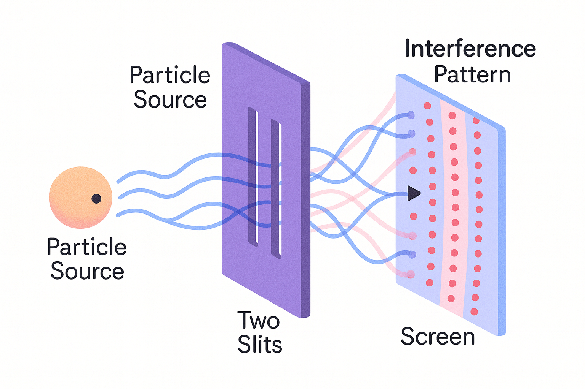

Musings
favorite things 11.05.25
building a company is a high entropy experience; some days, I feel on top of the world. other days, I feel alone.
i tend to make lists. collections of favorite tracks, quotes, goals and places.
here is a list of things that spark joy. i open this list on harder days.
- chopin, fantasie impromptu
- mondrian, composition with red, blue and yellow
- a good matcha latte with oat milk and honey (half sweet)
- large bodies of water, lake alberta
- printed research papers
- breakfast at tiffany's, moon river
- grey cats with blue eyes
- elegant theories, proofs and explanations for the universe
- eggs of all kinds, softly scrambled
- dairy free desserts
- long form essays and opinion pieces from interesting minds
- chill edm, odesza, big wild, san holo
- lifting
- nina simone
- books on human psychology and cognitive flexibility
- barry's
- dali, the meditative rose
- the alchemist
- north point egg waffles
- a good conversation
negative probabilities 10.19.25
I recently came across the concept of negative probabilities. Negative probabilities are used in quantum computing to represent quantum states. While I'm not a quantum theorist, I'm going to try to present this in simpler terms.
Ordinary probabilities must lie between 0-1, and always add up to 1 across mutually exclusive outcomes.
Negative probabilities allow values < 0. This seems counterintuitive because how can an event occur with a probability below 0?
Consider this shift in framing: instead of imagining outcomes as singular events, consider outcomes as the result of complex pathways with interfering possibilities that sometimes cancel each other out.
Here is an image of the famous double-slit experiment:
In this setup, you shoot particles at a wall with two slits, and behind there's a screen that records where each particle lands (a dot). If you close one slit, you get a normal distribution of dots like in classical probability.
But when both slits are open, you don't just get two distributions added together. Instead, you get an interference pattern of bright and dark dots. This shows that the possibilities from the left slit and right slit are interacting. Some parts of the screen have no dots! This isn't possible if probabilities are purely additive - mathematically, these "negative probabilities" represent interferences where one path cancels another.
I like this concept because it reminds us that reality isn't just "either A or B", but rather "A and B interacting." While we often focus on outcomes through a single slit lens, positive interference and amplification can come from sources we don't expect: hobbies, market dynamics and pathways taken by other people.
In other words, uncertainty is what makes life fun 🙃
explore vs. exploit 10.13.25
Most dilemmas in life can be understood through the lens of the exploration-exploitation tradeoff. I've given this framework to job searching new grads, friends looking for a life partner and more. People stuck in exploration are continuously searching, paralyzed by the inability to choose. People in exploitation mode may want to take a leap, but are afraid to leave what is known.
LLMs typically fail to explore properly, and humans are no different. This tradeoff doesn't matter if we have infinite time horizon, but we do not (which is what makes life valuable in a postmodern sense - will write another post on sense of urgency). We typically alternate between exploration and exploitation phases in our lives. So when faced with decisions, I always ask: are you exploring, or are you exploiting?